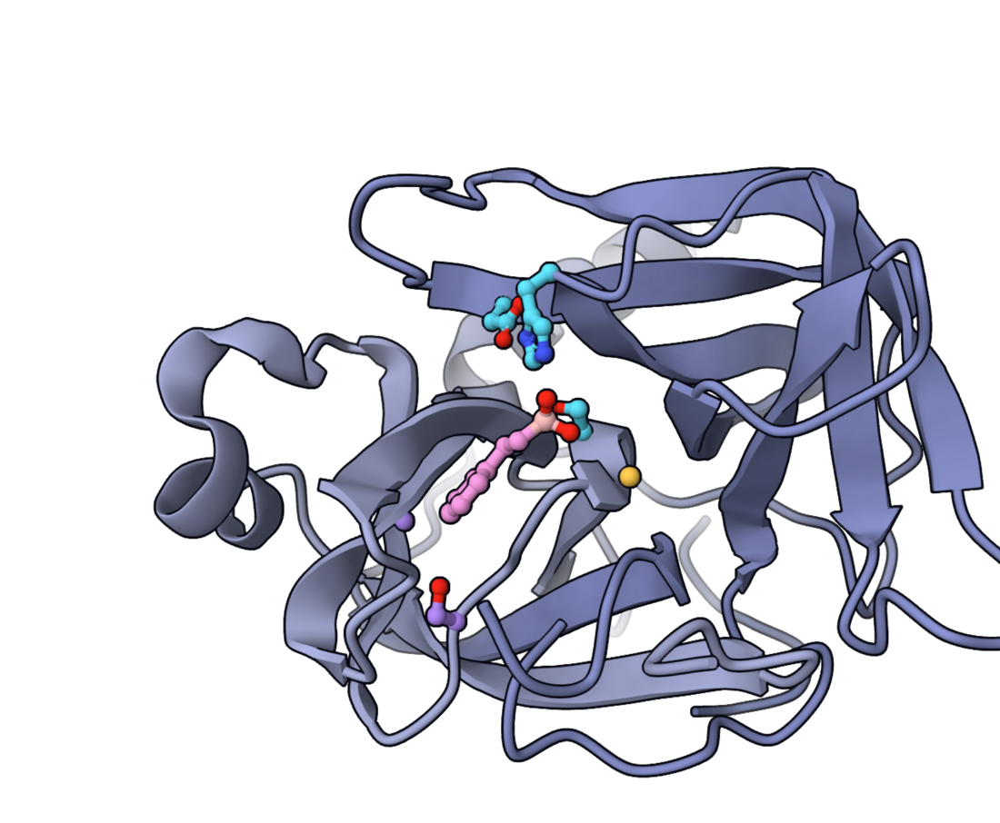

Shown with Enzymes (the model is a still picture of the real chymotrypsin structure). Proteins, Reactions, Shapes, Orbitals, Polarity, and Trends would use these same five slots, so a student who learns one page knows them all. The lesson text is the real text from your lesson, unchanged.
Desktop

His57Asp102Ser195Oxyanion holeThe catalytic triad is Ser195, His57, and Asp102. They’re linked by hydrogen bonds, and each has a job. Click Ser195: its side-chain oxygen is the nucleophile that attacks the peptide bond.
The open definition shows the beginner tooltip: dotted-underlined words explain themselves on hover, keyboard focus, or tap. It opens inside the panel, so it never covers the model.
Phone · option 1: bottom sheet you can drag Recommended
The catalytic triad is Ser195, His57, and Asp102. They’re linked by hydrogen bonds, and each has a job. Click Ser195: its side-chain oxygen is the nucleophile that attacks the peptide bond.
Step 1 of 5 · Your turn
Click serine 195 (Ser195).
Lesson 2 · step 1 of 5
The catalytic triad is Ser195, His57, and Asp102. They’re linked by hydrogen bonds, and each has a job…
Option 2: a fixed split with no dragging. It looks exactly like the “Reading” picture, but the sheet can’t move. It’s simpler and can’t be mis-dragged, but the model is stuck at about 40% of the screen, which is small for a protein. I recommend option 1, with a visible handle and tap-to-toggle so it also works without dragging.
End of a lesson
✓ Lesson finished
Nice work. Try a few questions on this while it’s fresh, or keep going.
Every lesson ends with the same two choices. “Practice this topic” opens Practice with only that topic’s questions.